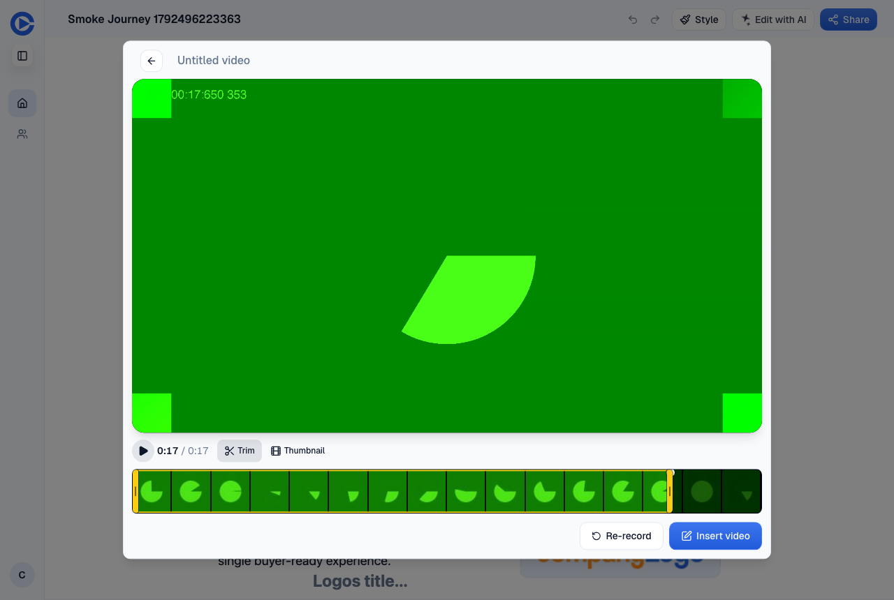
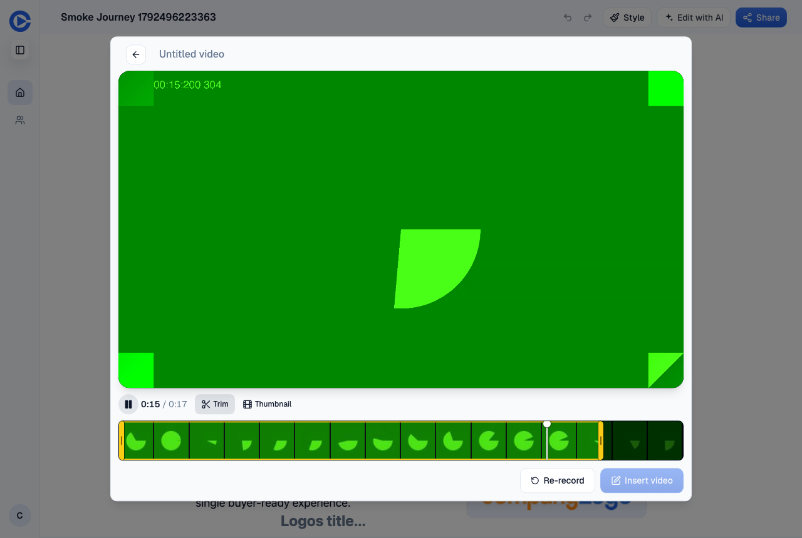
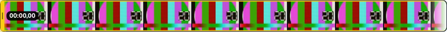
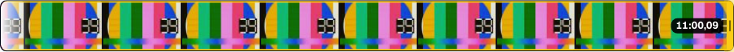
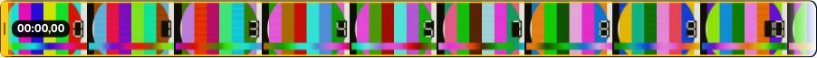
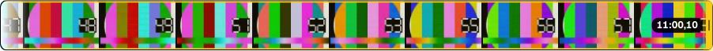
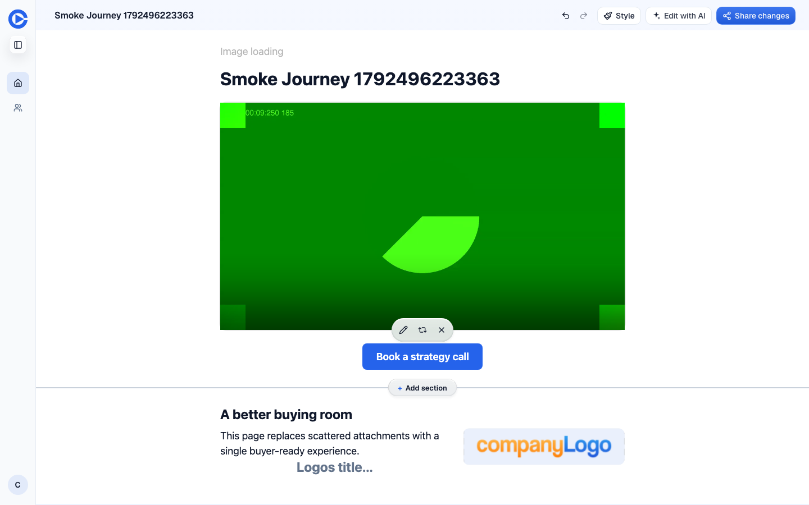

Recorder trim fixes: before and after
A customer recorded an 11-minute take from a journey page, trimmed both ends, and inserted it. They could not hear the ending they had cut, the zoomed strip went dark while they set the start, and the inserted video played the parts they had trimmed off. Three stacked PRs, one per problem.
Issue #1539 · Fake-camera takes on the staging QA account. Before runs main's editor on staging. After runs the PR's editor against the same staging backend.
1. Play the last seconds before an end cut
PR #1540 · base main · head 70c78c4b3
After dragging the end handle, Play ran one frame and stopped at the cut. A second Play jumped to the start. There was no way to hear whether the ending landed.
Fix. Moving the end handle cues the next Play to start 3 s before the cut and stop at it. The Play after that starts from the trim start, as before.
Before main on staging

After this PR

Measured
- Before, staging: the first Play starts at 17.16 s and stops at 17.19 s. The second starts at 0.00 s.
- After: the first Play starts at 14.18 s and plays to the cut at 17.18 s. The second starts at 0.00 s.
- Arrow keys instead of a drag behave the same. The Edit video modal gets the same fix.
2. Real frames in the zoomed strip for a fresh recording
PR #1542 · base fix/trim-end-cue · head c14a9f9f6
Holding a handle zooms the strip to 12 s. A recording not yet on Mux had no frames for that window, so every tile repeated one picture. On the customer's take that picture was black.
Fix. The strip decodes each zoomed tile's own frame from the local recording, starting under the held handle. A tile shows the nearest frame it has until its own arrives.
Before main on staging


After this PR


Measured
- Before, staging: 1 distinct picture across 10 zoomed tiles.
- After: 10 of 10 tiles show their own frame 233 ms (start handle) and 305 ms (end handle) after the zoom lands.
- A full-speed pan stays at most one tile behind, for at most 173 ms.
3. Play a saved trim before its clip exists
PR #1541 · base fix/trim-zoom-frames · head 2695715ec
After Insert, the trimmed clip takes Mux a while to cut. Until then the editor and the public page played the whole take, and the open editor never switched to the clip without a reload.
Fix. Until the clip exists, playback serves the source limited to the saved trim. The editor polls while the clip job runs, and the clip takes over without a reload.
Before main on staging

After this PR
Measured
- Before, staging: the editor played the whole 20.18 s take and never switched, although the clip existed from +12 s. The public page served the untrimmed take for 22 s after Insert.
- After, PR preview: the editor played the trimmed span from +2 s and switched to the 7.56 s clip at +48 s with no reload. The public page served the span for 17 s, then the clip.
- Until the clip lands the cut is approximate. Mux cuts the source at 5 s segment boundaries, so up to a segment of trimmed-off video can show at each end. The clip that follows is exact.
Hold. Do not land yet. Prod has 12 imported videos whose Mux asset is already the trimmed render while their saved trim still uses the longer original's timeline. This PR would cut another 3 to 11 s off the start of each. Their saved trims need repairing first.